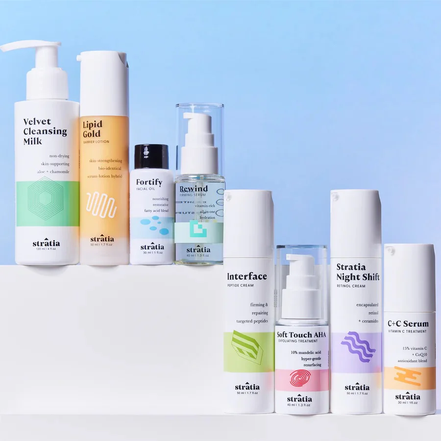
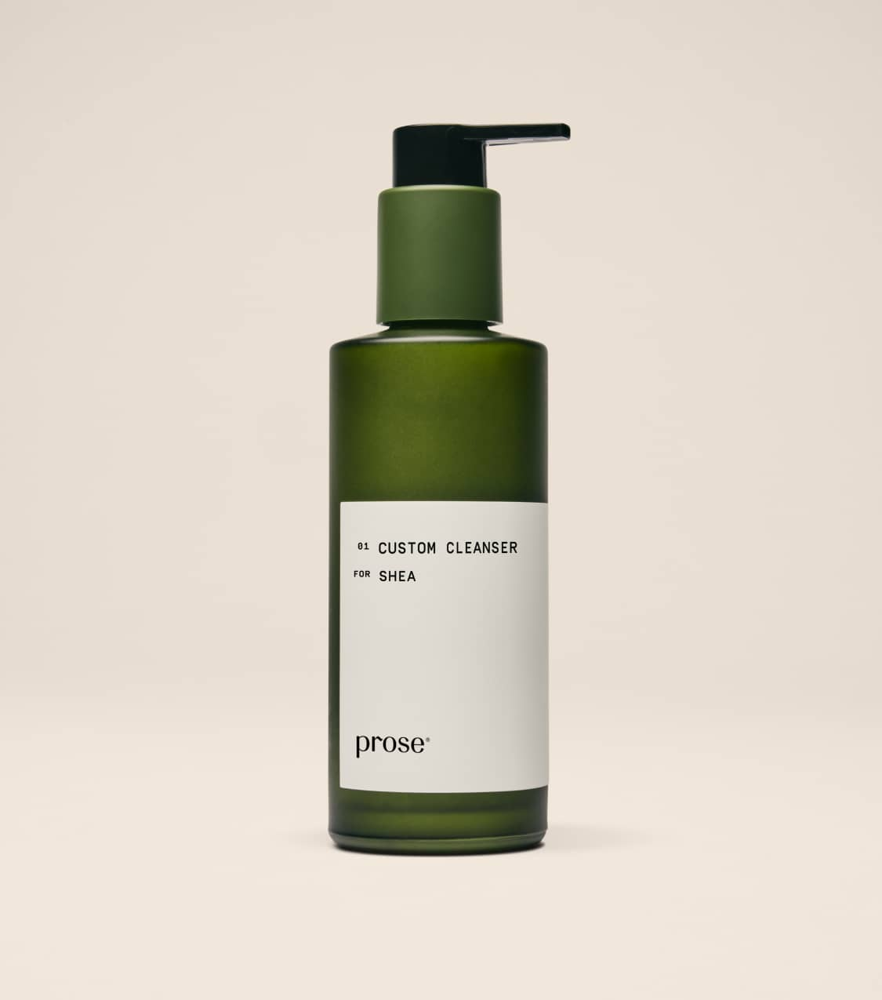

UX/UI case study · 2026
Designing calm into skincare commerce.

01 · The challenge
Premium without becoming distant.
Skincare storefronts often create friction in one of two ways: too much clinical information, or too little guidance. PureGlow explores a quieter middle ground where editorial confidence and useful decision support work together.
02 · Design principles
Useful restraint.
The interface uses whitespace as structure, not decoration. Every interaction should either orient the visitor, reduce uncertainty or make the product feel more tangible.
Orient
Editorial hierarchy introduces the brand without slowing discovery.
Guide
Concerns and routine questions translate needs into choices.
Reassure
Ingredients, usage and demo labels make expectations explicit.
Remember
Cart, wishlist and routine results persist locally.
03 · Design system
Warm minimalism,
built to scale.
The palette borrows from glass bottles, botanical formulas, untreated paper and warm stone.
Quiet formulas.
Clear, low-friction language supports the more distinctive display typography.
04 · Interaction model
A storefront that behaves like a prototype.
Instead of dead links, the concept includes working local cart and wishlist states, search filtering, a responsive image gallery, quantity controls, accordions, notifications and a two-step recommendation flow.


05 · Inclusive details
Polish includes the invisible parts.
Semantic landmarks, keyboard-accessible controls, visible focus states, descriptive labels, reduced-motion support and responsive touch targets are treated as part of the visual craft—not a final checklist.